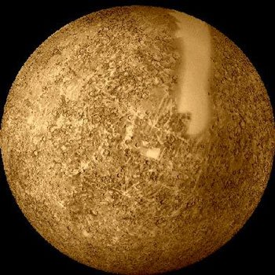

Меркурій
Меркурій був богом торгівлі у стародавніх римлян. Відстань планети до Сонця змінюється у межах від 46 млн. км до 70 млн. км. Меркурій — найменша з усіх планет, його діаметр усього 5000 кілометрів. Хоч Меркурій і розташований найближче до Сонця, на ньому найхолодніші у Сонячній системі ночі.
До того, як зонд «Марінер 10» пролетів поблизу Меркурія в 1974 році, про цю планету було відомо зовсім мало. Вона знаходиться так близько до Сонця, що сліпучий блиск робить майже неможливим спостереження за нею із Землі.
«Марінер 10» запущено в листопаді 1973 року, і перший раз він пролетів поблизу Меркурія через 5 місяців. Фотографії із зонда показують планету, схожу на наш Місяць, з такими ж глибокими кратерами і високими скелями. Ядро Меркурія складається із заліза, а його діаметр такий самий, як і в Місяця. Поверхня планети вкрита пористою речовиною темно-бурого кольору.
Меркурій оточений дуже тонким шаром газів, в основному воднем, гелієм і неоном. Оскільки атмосфери, яка б утримувала тепло, нема, то температура коливається від +425 °С на сонячному до —173 °С на темному боці планети. Меркурій обертається так повільно, що один день продовжується майже 59 земних, але рухається навколо Сонця так швидко, що «рік» завершується всього лиш за 88 земних днів. У Меркурія нема супутників. Його гравітаційна сила вдвічі менша земної.
У 1974 році космічний апарат «Марінер 10» передав на Землю зображення Меркурія — планети, яка покрита великою кількістю кратерів разміром від декількох метрів до сотень кілометрів